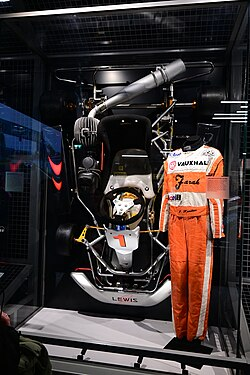

Hamilton began karting in 1993 and quickly began winning races and cadet class championships.[27][28] Two years later, he became the youngest driver to win the British cadet karting championship at the age of ten. That year, Hamilton approached McLaren Formula One team boss Ron Dennis at the Autosport Awards for an autograph and said: "Hi. I'm Lewis Hamilton. I won the British Championship and one day I want to be racing your cars."[17] Dennis wrote in Hamilton's autograph book: "Phone me in nine years, we'll sort something out then."[29]When Hamilton was 12, Ladbrokes took a bet, at 40/1 odds, that Hamilton would win a Formula One race before the age of 23; another predicted, at 150/1 odds, that he would win the World Drivers' Championship before he was 25.[30] In 1998, Dennis called Hamilton following his second Super One series and British championship wins,[14] to offer Hamilton a role in the McLaren-Mercedes Young Driver Programme.[7] The contract included an option of a future Formula One seat, which would make Hamilton the youngest driver to secure a contract that later resulted in a Formula One drive.[27]He's a quality driver, very strong and only 16. If he keeps this up I'm sure he will reach F1. It's something special to see a kid of his age out on the circuit. He's clearly got the right racing mentality.— Michael Schumacher, speaking about Hamilton in 2001[31]Hamilton continued his progress in the Intercontinental A (1999), Formula A (2000) and Formula Super A (2001) ranks, and became European Champion in 2000 with maximum points. In Formula A and Formula Super A, racing for TeamMBM.com, his teammate was Nico Rosberg, who would later drive for the Williams and Mercedes teams in Formula One; they would later team up again for Mercedes from 2013 to 2016. Following his karting successes, the British Racing Drivers' Club made him a "Rising Star" Member in 2000.[32] In 2001, Michael Schumacher made a one-off return to karts and competed against Hamilton along with other future Formula One drivers Vitantonio Liuzzi and Nico Rosberg. Hamilton ended the final in seventh, four places behind Schumacher. Although the two saw little of each other on the track, Schumacher praised the young Briton.[33]
Hamilton began his car racing career in the 2001 British Formula Renault Winter Series, finishing fifth in the standings.[14] This led to a full 2002 Formula Renault UK campaign with Manor Motorsport in which he finished third overall, and fifth in the Formula Renault Eurocup amidst only competing for four rounds.[34] He remained with Manor for another year in Formula Renault UK, winning the championship in a dominant fashion ahead of Alex Lloyd, as he registered 10 wins from 15 races.[35] Having clinched the championship, Hamilton missed the last two races of the season to make his debut in the season finale of the British Formula 3 Championship.[36] In his first race he was forced out with a puncture,[37] and in the second he crashed out and was taken to hospital after a collision with teammate Tor Graves.[38]Asked in 2002 about the prospect of becoming one of the youngest ever Formula One drivers, Hamilton replied that his goal was "not to be the youngest in Formula One" but rather "to be experienced and then show what I can do in Formula One".[39] He made his debut with Manor in the 2004 Formula 3 Euro Series, ending the year fifth in the championship.[40] He also won the Bahrain F3 Superprix,[41] and twice raced in the Macau F3 Grand Prix.[42][43] Williams had come close to signing Hamilton but did not as BMW, their engine supplier at the time, refused to fund him.[44] Hamilton eventually re-signed with McLaren. According to then McLaren executive and future CEO Martin Whitmarsh, who was responsible for guiding Hamilton through the team's young driver programme, he and Anthony Hamilton had a "huge row" at the end of the season, with his father pushing for him to move up to GP2 for 2005, while Whitmarsh felt that he should remain in Formula 3 for a second season, culminating in Whitmarsh tearing up Hamilton's contract; however, Hamilton called Whitmarsh six weeks later and re-signed with the team.[17]Hamilton had his first Formula One test with McLaren in late 2004 at Silverstone.[45] He moved to the reigning Euro Series champions, ASM for the 2005 season and dominated the championship, winning 15 of the 20 rounds and bragging 13 pole positions.[14] He also won the Marlboro Masters of Formula 3 at Zandvoort.[46] Following his success, British magazine Autosport featured him in their "Top 50 Drivers of 2005" issue, ranking Hamilton at 24th.[14]
Hamilton moved to ASM's sister GP2 team, ART Grand Prix, for the 2006 season.[47] Hamilton won the GP2 championship at his first attempt, beating Nelson Piquet Jr.[48] He secured a dominant win at the Nürburgring, amidst a penalty for speeding in the pit lane.[49] At his home race in Silverstone, Hamilton overtook two rivals at Becketts, a series of high-speed corners where overtaking is considered to be rare.[50] In Istanbul he recovered from a spin that left him in 18th place to take second.[51] Hamilton won the title in unusual circumstances, inheriting the final point he needed after Giorgio Pantano was stripped of fastest lap in the Monza feature race.[52]